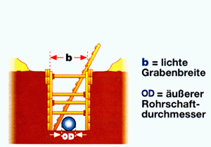
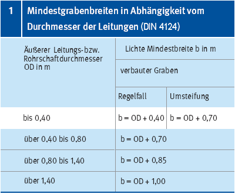
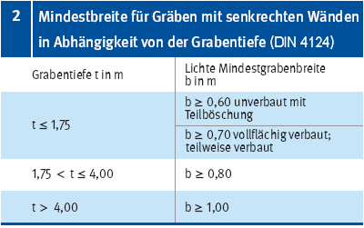

Besondere Maße gelten für Gräben mit senkrechten Wänden und mit Arbeitsraum. Das jeweils größere Maß aus den untenstehenden Tabellen ist zu nehmen.
Für Abwasserleitungen und Abwasserkanäle nach DIN EN 1610 gelten andere Arbeitsraumabmessungen

